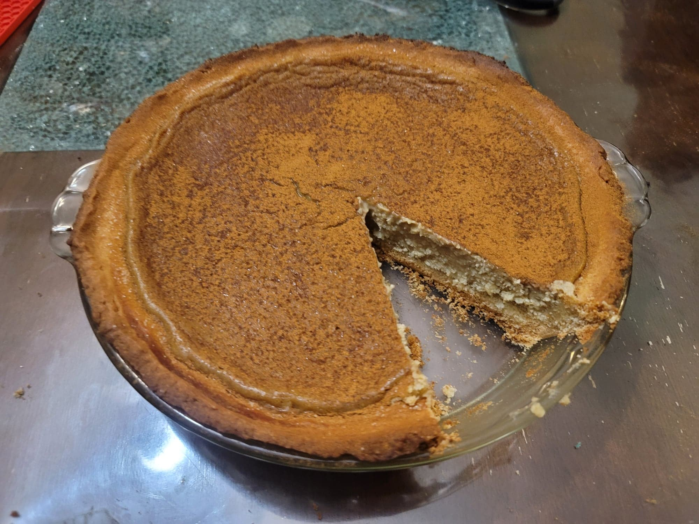

Melktert

Ingredients:
Crust:
- 125 g Butter, softened, about 1 stick
- 100 g Sugar
- 1 Egg
- 175 g Flour
- 2 tsp Baking powder
- 1/2 tsp Salt
Melktert:
- 130 grams Sugar
- 3 tbsp Flour
- 1 tbsp Cornstarch
- 1/2 tsp Salt
- 850 ml Milk, about 3 3/5 cups
- 2 sticks Cinnamon
- 60 g Butter, about 1/2 stick
- 4 Eggs
- 2 tsp Vanilla
- 1-2 tsp Ground cinnamon or Cinnamon sugar
Instructions:
- Place the softened butter and the sugar into a mixing bowl. Cream together with an electric hand mixer until well incorporated. Then add in the egg cream again with the electric mixer.
- In a separate bowl, whisk together the flour, baking powder, and salt. Then fold it into the wet ingredients. Knead the dough until just homogenous.
- Place the dough into a 9 inch pie pan. Flatten the dough with the bottom of a measuring cup to cover the pie pan evenly. Cut any excess with a knife.
- Preheat the oven to 390 degrees Fahrenheit.
- In a large bowl, whisk together the sugar, flour, cornstarch, and salt. Place the milk and cinnamon sticks into a pot and bring to a boil. Lower the heat to medium and slowly add the dry ingredients while mixing continuously. Cook over medium while whisking continuously. It should begin to resemble a bechamel sauce in texture.
- Add in the butter and whisk to combine. Then remove from heat. Let cool for 10 minutes, whisking occasionally to prevent a skin from forming on the surface. Then remove the cinnamon sticks.
- While it is cooling, whisk together the eggs and vanilla extract in a separate bowl. Then pour the eggs into the mixture while whisking continuously. Once homogenous, pour the mixture into the pie crust.
- Cover the pie pan with aluminum foil, making sure to tent the middle so that it does not touch the filling during baking. Bake for 30 minutes before removing the foil. Then bake without the foil for about 20 more minutes, or until the crust is golden. Remove from the oven. The filling will still be wobbly at this point.
- Dust the melktert with the cinnamon or cinnamon sugar. Transfer to a fridge to chill. Once chilled, the filling will have firmed up. Serve cold.